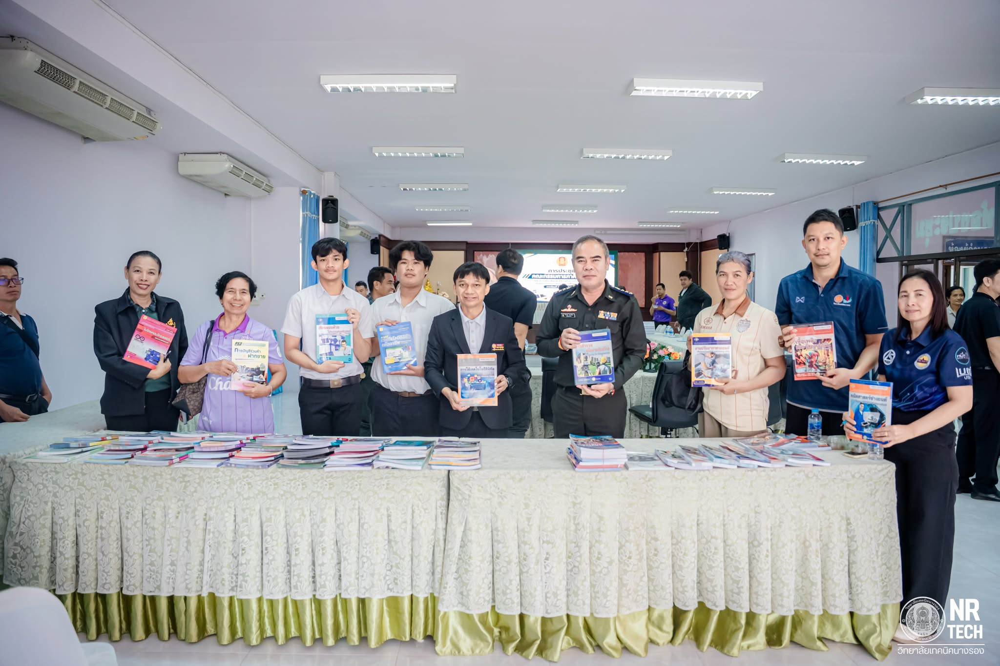

เกี่ยวกับวิทยาลัย
วิทยาลัยเทคนิคนางรองเป็นสถานศึกษาด้านอาชีวศึกษา มุ่งเน้นการจัดการเรียนรู้และพัฒนาทักษะวิชาชีพ เพื่อเตรียมความพร้อมให้ผู้เรียนสามารถนำความรู้ ไปประยุกต์ใช้ในการทำงานและการศึกษาต่อ
ประวัติวิทยาลัย
-
• จุดเริ่มต้น (พ.ศ. 2536): ก่อตั้งขึ้นตามนโยบายขยายโอกาสทางการศึกษาด้านวิชาชีพของกระทรวงศึกษาธิการ โดยจัดตั้งขึ้นเมื่อวันที่ 8 เมษายน พ.ศ. 2536 ภายใต้ชื่อแรกเริ่มคือ "วิทยาลัยการอาชีพนางรอง" เพื่อตอบสนองความต้องการแรงงานฝีมือในท้องถิ่นและพื้นที่ใกล้เคียง
- • การยกระดับสถานศึกษา: ด้วยการขยายตัวของสถานศึกษา จำนวนนักเรียนที่เพิ่มมากขึ้น และความพร้อมในการจัดการศึกษาที่ครอบคลุมสาขาวิชาช่างอุตสาหกรรมและบริหารธุรกิจในระดับที่สูงขึ้น จึงได้รับการยกฐานะและเปลี่ยนชื่อเป็น "วิทยาลัยเทคนิคนางรอง" เพื่อรองรับการจัดการเรียนการสอนที่ตอบโจทย์ภาคอุตสาหกรรมอย่างเต็มรูปแบบ

วิสัยทัศน์และเป้าหมาย
มุ่งมั่นจัดการอาชีวศึกษาให้มีคุณภาพตามมาตรฐานสากล พัฒนาผู้เรียนให้มีสมรรถนะ คุณธรรม และจริยธรรม พร้อมตอบสนองความต้องการของตลาดแรงงานและสังคม
"อาชีวะ สร้างคน สร้างชาติ"
"ทักษะดี มีวินัย ใฝ่คุณธรรม นำสังคม"
ภาพกิจกรรมและบรรยากาศ
วิทยาลัยเทคนิคนางรองจัดการประชุมคณะกรรมการภาคี 4 ฝ่าย เพื่อหารือและพิจารณาแนวทางการดำเนินโครงการสนับสนุนค่าใช้จ่ายในการจัดการศึกษา ตั้งแต่ระดับอนุบาลจนจบการศึกษาขั้นพื้นฐาน ประจำภาคเรียนที่ 2 ปีการศึกษา 2569
